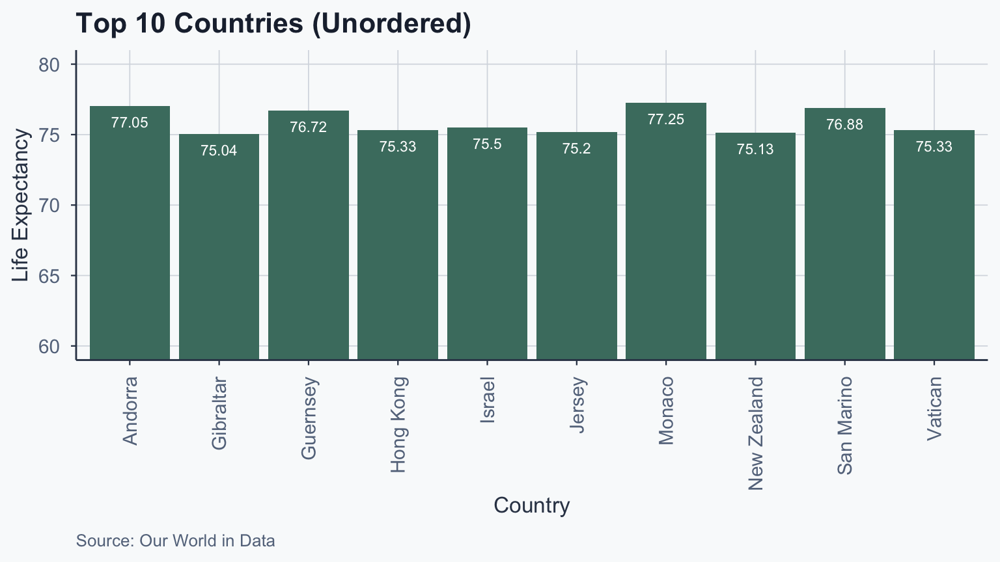
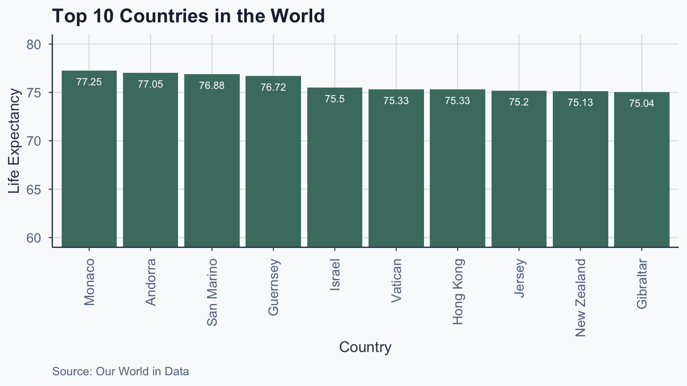
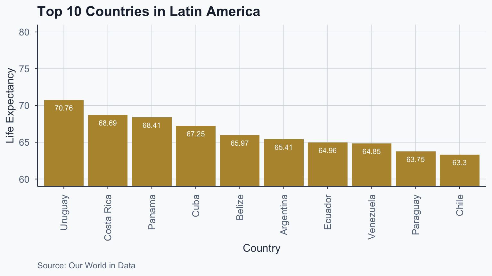
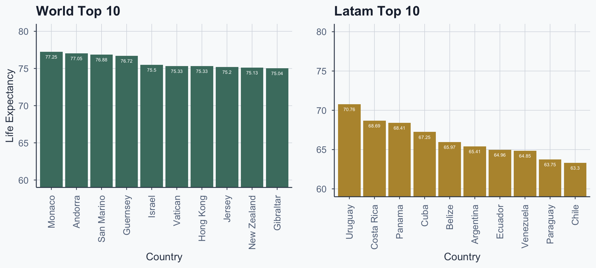
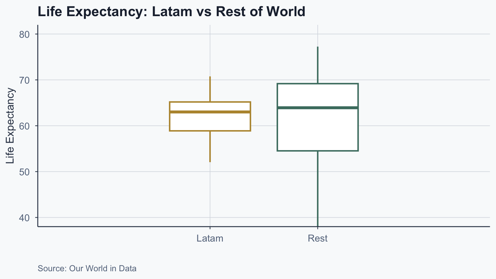
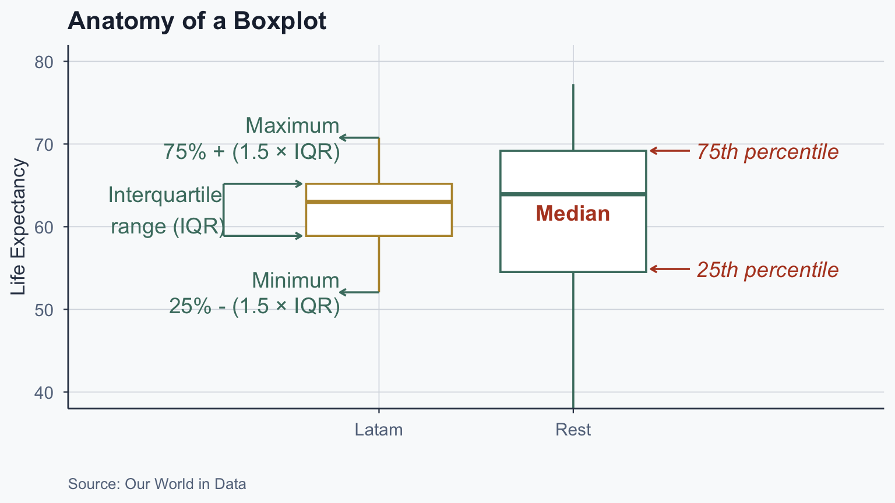
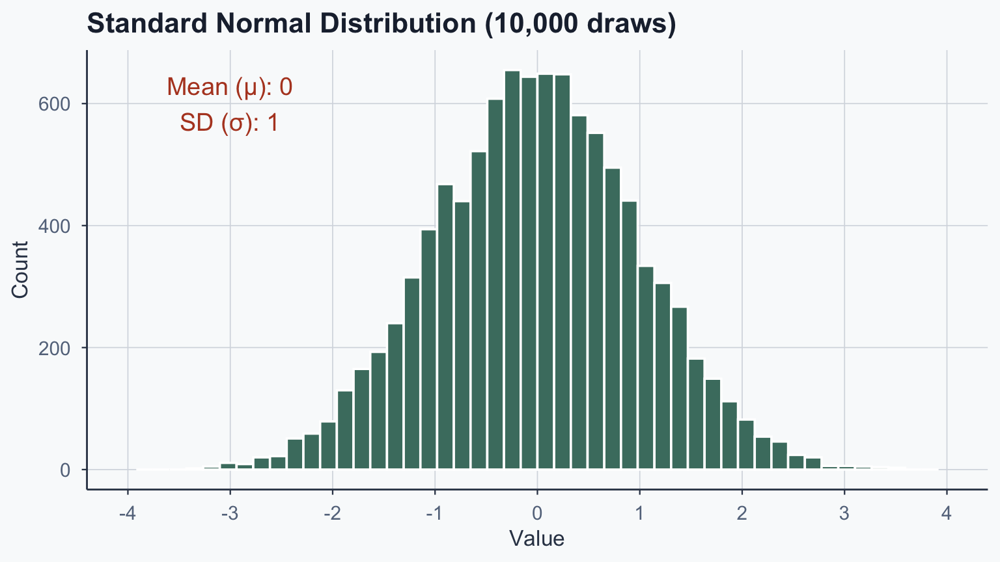
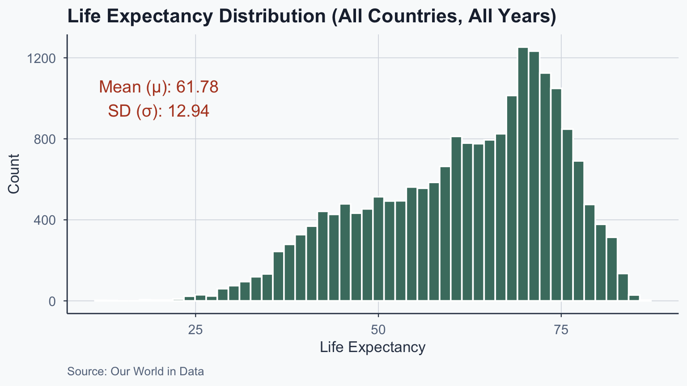
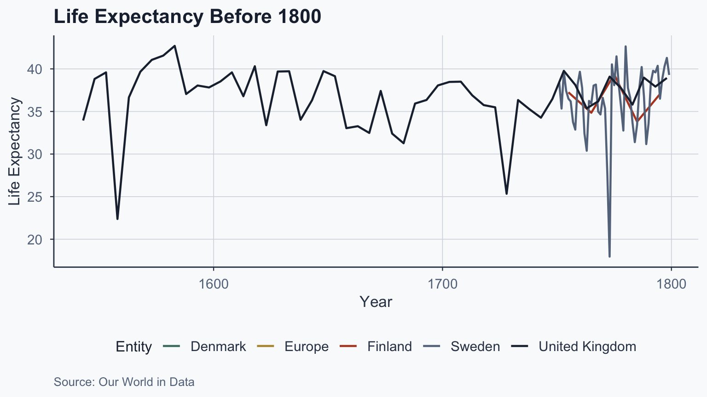
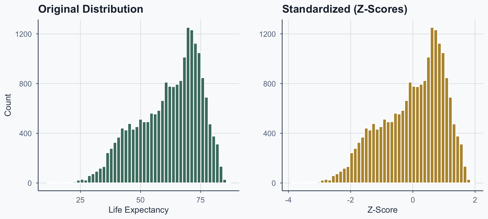

Statistical Analysis
Lab 6: Hypothesis Testing
![]()
Intro
Setup
Open a new Quarto document and use this preamble:
---
title: "Lab 6"
author: "Your Name"
date: today
format:
html:
toc: true
number-sections: true
colorlinks: true
smooth-scroll: true
embed-resources: true
---Render and save under “week6” in your “stats” folder.
Z-Tests
Loading Libraries
What Are Z-Tests?
- Evaluate if averages of two datasets differ
- Require known standard deviation or variance
- Sample size should be larger than 30
- We compare Latin American countries to the world
Loading the Data
If you need the dataset:
Cleaning the Data
Average life expectancy per country (remove time dimension):
Inspecting the Data
# A tibble: 10 × 3
# Groups: Entity [10]
Entity Code life_exp_mean
<chr> <chr> <dbl>
1 Afghanistan AFG 45.4
2 Albania ALB 68.3
3 Algeria DZA 57.5
4 American Samoa ASM 68.6
5 Andorra AND 77.0
6 Angola AGO 45.1
7 Anguilla AIA 69.4
8 Antigua and Barbuda ATG 71.2
9 Argentina ARG 65.4
10 Armenia ARM 67.2Sorting by Life Expectancy
clean_life_expectancy_sorted_df <- clean_life_expectancy_df[
order(-clean_life_expectancy_df$life_exp_mean),
]
head(clean_life_expectancy_sorted_df, n = 10)# A tibble: 10 × 3
# Groups: Entity [10]
Entity Code life_exp_mean
<chr> <chr> <dbl>
1 Monaco MCO 77.3
2 Andorra AND 77.0
3 San Marino SMR 76.9
4 Guernsey GGY 76.7
5 Israel ISR 75.5
6 Vatican VAT 75.3
7 Hong Kong HKG 75.3
8 Jersey JEY 75.2
9 New Zealand NZL 75.1
10 Gibraltar GIB 75.0Barplot: Unordered
Show code
life_exp_top10 <- head(clean_life_expectancy_sorted_df, n = 10)
ggplot(life_exp_top10, aes(x = Entity, y = life_exp_mean)) +
geom_bar(stat = "identity", fill = sage) +
coord_cartesian(ylim = c(60, 80)) +
geom_text(
aes(label = round(life_exp_mean, 2)),
vjust = 2, colour = "white", size = 3
) +
labs(
title = "Top 10 Countries (Unordered)",
x = "Country", y = "Life Expectancy",
caption = "Source: Our World in Data"
) +
theme_meridian() +
theme(axis.text.x = element_text(
angle = 90, vjust = 0.5, hjust = 1
))
Top 10 Countries: Ordered
We use reorder() to sort bars by value:
Show code
ggplot(life_exp_top10, aes(
x = reorder(Entity, -life_exp_mean),
y = life_exp_mean
)) +
geom_bar(stat = "identity", fill = sage) +
coord_cartesian(ylim = c(60, 80)) +
geom_text(
aes(label = round(life_exp_mean, 2)),
vjust = 2, colour = "white", size = 3
) +
labs(
title = "Top 10 Countries in the World",
x = "Country", y = "Life Expectancy",
caption = "Source: Our World in Data"
) +
theme_meridian() +
theme(axis.text.x = element_text(
angle = 90, vjust = 0.5, hjust = 1
))
Selecting Latin American Countries
latam_countries <- c(
"Belize", "Costa Rica", "El Salvador",
"Guatemala", "Honduras", "Mexico",
"Nicaragua", "Panama", "Argentina",
"Bolivia", "Brazil", "Chile", "Colombia",
"Ecuador", "Guyana", "Paraguay", "Peru",
"Suriname", "Uruguay", "Venezuela",
"Cuba", "Dominican Republic", "Haiti"
)
latam_countries_df <- subset(
clean_life_expectancy_df,
(Entity %in% latam_countries)
)Top 10 Latam: Barplot
Show code
life_exp_top10_latam <- latam_countries_df[
order(-latam_countries_df$life_exp_mean),
]
life_exp_top10_latam <- head(life_exp_top10_latam, n = 10)
ggplot(life_exp_top10_latam, aes(
x = reorder(Entity, -life_exp_mean),
y = life_exp_mean
)) +
geom_bar(stat = "identity", fill = gold) +
coord_cartesian(ylim = c(60, 80)) +
geom_text(
aes(label = round(life_exp_mean, 2)),
vjust = 2, colour = "white", size = 3
) +
labs(
title = "Top 10 Countries in Latin America",
x = "Country", y = "Life Expectancy",
caption = "Source: Our World in Data"
) +
theme_meridian() +
theme(axis.text.x = element_text(
angle = 90, vjust = 0.5, hjust = 1
))
Side-by-Side Comparison
Show code
figure_3 <- ggplot(life_exp_top10, aes(
x = reorder(Entity, -life_exp_mean),
y = life_exp_mean
)) +
geom_bar(stat = "identity", fill = sage) +
coord_cartesian(ylim = c(60, 80)) +
geom_text(
aes(label = round(life_exp_mean, 2)),
vjust = 2, colour = "white", size = 2
) +
labs(title = "World Top 10", x = "Country", y = "Life Expectancy") +
theme_meridian() +
theme(axis.text.x = element_text(
angle = 90, vjust = 0.5, hjust = 1
))
figure_4 <- ggplot(life_exp_top10_latam, aes(
x = reorder(Entity, -life_exp_mean),
y = life_exp_mean
)) +
geom_bar(stat = "identity", fill = gold) +
coord_cartesian(ylim = c(60, 80)) +
geom_text(
aes(label = round(life_exp_mean, 2)),
vjust = 2, colour = "white", size = 2
) +
labs(title = "Latam Top 10", x = "Country", y = "") +
theme_meridian() +
theme(axis.text.x = element_text(
angle = 90, vjust = 0.5, hjust = 1
))
grid.arrange(figure_3, figure_4, ncol = 2)
Two-Tailed Z-Test
The Problem
Is the mean life expectancy in Latin America equal to the population life expectancy?
Answer: Two-tailed z-test
- We ask if something is “EQUAL” to something else
- \(H_0\): sample mean = population mean
- \(H_1\): sample mean \(\neq\) population mean
Computing the Parameters
| Parameter | Value |
|---|---|
| \(\mu\) | 61.93 |
| \(\sigma\) | 8.69 |
| \(\bar{X}\) | 61.91 |
| \(n\) | 23 |
Z-Test Formula
\[Z_{obs}=\frac{\bar{X}-\mu}{\frac{\sigma}{\sqrt{n}}}\]
Z-Test Using BSDA Package
z_obs2 <- BSDA::z.test(
latam_countries_df$life_exp_mean,
mu = mean_population,
sigma.x = sd_population,
alternative = "two.sided"
)
z_obs2
One-sample z-Test
data: latam_countries_df$life_exp_mean
z = -0.011109, p-value = 0.9911
alternative hypothesis: true mean is not equal to 61.93416
95 percent confidence interval:
58.36373 65.46434
sample estimates:
mean of x
61.91404 Note: alternative controls test type — "two.sided", "greater", or "less".
Interpretation
- \(H_0\): Latam mean = population mean
- \(H_1\): Latam mean \(\neq\) population mean
We do not reject H0 because p >= 0.05: no significant difference.
Boxplot: Latam vs Rest
Show code
clean_life_expectancy_df_continent <- clean_life_expectancy_df
clean_life_expectancy_df_continent$sample <- "Rest"
clean_life_expectancy_df_continent$sample[
clean_life_expectancy_df_continent$Entity %in% latam_countries
] <- "Latam"
ggplot(clean_life_expectancy_df_continent, aes(
x = sample, y = life_exp_mean, color = sample
)) +
geom_boxplot(linewidth = 0.8) +
coord_cartesian(xlim = c(0, 3), ylim = c(40, 80)) +
scale_color_manual(values = c("Latam" = gold, "Rest" = sage)) +
labs(
title = "Life Expectancy: Latam vs Rest of World",
x = "", y = "Life Expectancy",
caption = "Source: Our World in Data"
) +
theme_meridian() +
theme(legend.position = "none")
Interpreting a Boxplot
Show code
merged_latam <- subset(
clean_life_expectancy_df_continent, sample == "Latam"
)
hwy_50 <- quantile(merged_latam$life_exp_mean, 0.5)
hwy_25 <- quantile(merged_latam$life_exp_mean, 0.25)
hwy_75 <- quantile(merged_latam$life_exp_mean, 0.75)
sd_bp <- sd(merged_latam$life_exp_mean, na.rm = TRUE) / 4
hwy_iqr <- hwy_75 - hwy_25
merged_all <- subset(
clean_life_expectancy_df_continent, sample != "Rest"
)
hwy2_25 <- quantile(merged_all$life_exp_mean, 0.25, na.rm = TRUE)
hwy2_75 <- quantile(merged_all$life_exp_mean, 0.75, na.rm = TRUE)
hwy2_min <- boxplot.stats(merged_all$life_exp_mean)$stats[1]
hwy2_max <- boxplot.stats(merged_all$life_exp_mean)$stats[5]
ggplot(clean_life_expectancy_df_continent, aes(
x = sample, y = life_exp_mean, color = sample
)) +
geom_boxplot() +
coord_cartesian(xlim = c(0, 3), ylim = c(40, 80)) +
scale_color_manual(values = c("Latam" = gold, "Rest" = sage)) +
# Median label
annotate("text", y = hwy_50 - sd_bp, x = 2,
label = "Median", color = terracotta, fontface = 2) +
# 25th percentile
annotate("text", y = hwy_25 - 4, x = 3,
label = "25th percentile", color = terracotta, fontface = 3) +
annotate("segment", y = hwy_25 - 4, yend = hwy_25 - 4,
x = 2.6, xend = 2.4, color = terracotta,
arrow = arrow(length = unit(0.3, "lines"))) +
# 75th percentile
annotate("text", y = hwy_75 + 4, x = 3,
label = "75th percentile", color = terracotta, fontface = 3) +
annotate("segment", y = hwy_75 + 4, yend = hwy_75 + 4,
x = 2.6, xend = 2.4, color = terracotta,
arrow = arrow(length = unit(0.3, "lines"))) +
# IQR
annotate("text", y = hwy_25 + 0.5 * hwy_iqr, x = -0.1,
label = "Interquartile\n range (IQR)", color = sage) +
annotate("segment", y = c(hwy2_25, hwy2_75),
yend = c(hwy2_25, hwy2_75), color = sage,
x = 0.2, xend = 0.6,
arrow = arrow(length = unit(0.3, "lines"))) +
annotate("segment", y = hwy2_25, yend = hwy2_75,
x = 0.2, xend = 0.2, color = sage) +
# Maximum whisker
annotate("text", y = hwy2_max, x = 0.8,
label = "Maximum\n75% + (1.5 \u00d7 IQR)",
hjust = 1, lineheight = 1, color = sage) +
annotate("segment", y = hwy2_max, yend = hwy2_max,
x = 1, xend = 0.8, color = sage,
arrow = arrow(length = unit(0.3, "lines"))) +
# Minimum whisker
annotate("text", y = hwy2_min, x = 0.8,
label = "Minimum\n25% - (1.5 \u00d7 IQR)",
hjust = 1, lineheight = 1, color = sage) +
annotate("segment", y = hwy2_min, yend = hwy2_min,
x = 1, xend = 0.8, color = sage,
arrow = arrow(length = unit(0.3, "lines"))) +
labs(
title = "Anatomy of a Boxplot",
x = "", y = "Life Expectancy",
caption = "Source: Our World in Data"
) +
theme_meridian() +
theme(legend.position = "none")
One-Tailed Z-Test: Greater
Is Latam Greater Than World?
Is the mean life expectancy in Latin America greater than the population mean?
Answer: One-tailed z-test (alternative = "greater")
Greater Than: Code
z_obs_greater <- BSDA::z.test(
latam_countries_df$life_exp_mean,
mu = mean_population,
sigma.x = sd_population,
alternative = "greater"
)
z_obs_greater
One-sample z-Test
data: latam_countries_df$life_exp_mean
z = -0.011109, p-value = 0.5044
alternative hypothesis: true mean is greater than 61.93416
95 percent confidence interval:
58.93453 NA
sample estimates:
mean of x
61.91404 Greater Than: Interpretation
- \(H_0\): Latam mean \(\leq\) population mean
- \(H_1\): Latam mean \(>\) population mean
We do not reject H0: Latam mean is not greater than population mean.
Testing the Wrong Direction
What If We Test “Less Than”?
The boxplot suggests Latam life expectancy is above the world mean. What happens if we test the opposite direction?
z_obs_less <- BSDA::z.test(
latam_countries_df$life_exp_mean,
mu = mean_population,
sigma.x = sd_population,
alternative = "less"
)
z_obs_less
One-sample z-Test
data: latam_countries_df$life_exp_mean
z = -0.011109, p-value = 0.4956
alternative hypothesis: true mean is less than 61.93416
95 percent confidence interval:
NA 64.89354
sample estimates:
mean of x
61.91404 Lesson: Direction Matters
- \(H_0\): Latam mean \(\geq\) population mean
- \(H_1\): Latam mean \(<\) population mean
We do not reject H0: Latam mean is not less than population mean.
The data pointed upward, but we tested downward — the p-value reflects that mismatch. Always let your hypothesis match your research question.
From Z-Tests to Z-Scores
Connecting the Ideas
- Z-tests use a z-statistic to compare group means
- But where does that z-statistic come from?
- It is a z-score: how many SDs a value is from the mean
- Z-scores convert any normal distribution to a standard one
- This lets us use a single table to find probabilities
What Is a Z-Score?
- The standard normal distribution: \(\mu = 0\), \(\sigma = 1\)
- A z-score of 2 = 2 standard deviations from the mean
- Z-scores let us find areas using the z-table
- Any normal distribution can be standardized
Standard Normal Distribution
Show code
set.seed(42)
generated_data <- data.frame(value = rnorm(10000, mean = 0, sd = 1))
ggplot(generated_data, aes(x = value)) +
geom_histogram(bins = 50, fill = sage, color = "white") +
scale_x_continuous(breaks = seq(-4, 4, by = 1), limits = c(-4, 4)) +
annotate(
"text", x = -3, y = 600,
label = "Mean (\u03BC): 0\nSD (\u03C3): 1",
color = terracotta, size = 5
) +
labs(
title = "Standard Normal Distribution (10,000 draws)",
x = "Value", y = "Count"
) +
theme_meridian()
Standardization Formula
\[z=\frac{x - \mu}{\sigma}\]
- \(z\) — z-score
- \(x\) — observation
- \(\mu\) — population mean
- \(\sigma\) — population standard deviation
Converting to Standard Normal
Life Expectancy Distribution
Show code
life_exp_df <- read.csv(file = './data/life-expectancy.csv')
names(life_exp_df)[4] <- "life_exp_yearly"
mean_life_exp <- mean(life_exp_df$life_exp_yearly, na.rm = TRUE)
sd_life_exp <- sd(life_exp_df$life_exp_yearly, na.rm = TRUE)
lines_label <- paste0(
"Mean (\u03BC): ", round(mean_life_exp, 2),
"\nSD (\u03C3): ", round(sd_life_exp, 2)
)
ggplot(life_exp_df, aes(x = life_exp_yearly)) +
geom_histogram(bins = 50, fill = sage, color = "white") +
annotate(
"text", x = 20, y = 1000,
label = lines_label,
color = terracotta, size = 5
) +
labs(
title = "Life Expectancy Distribution (All Countries, All Years)",
x = "Life Expectancy", y = "Count",
caption = "Source: Our World in Data"
) +
theme_meridian()
Historical Data
Which countries have data before 1800?
Historical Time Series
Show code
ggplot(historical_df, aes(x = Year, y = life_exp_yearly, color = Entity)) +
geom_line(linewidth = 0.8) +
scale_color_manual(values = c(sage, gold, terracotta, stone, slate)) +
labs(
title = "Life Expectancy Before 1800",
x = "Year", y = "Life Expectancy",
caption = "Source: Our World in Data"
) +
theme_meridian()
Calculating the Variance
- Variance: 167.33
- Standard deviation: 12.94
Applying the Formula
\[z=\frac{x - \mu}{\sigma}\]
Entity Code Year life_exp_yearly z_score
1 Afghanistan AFG 1950 27.7 (life_expectancy - mean) / sd
2 Afghanistan AFG 1951 28.0 (life_expectancy - mean) / sd
3 Afghanistan AFG 1952 28.4 (life_expectancy - mean) / sd
4 Afghanistan AFG 1953 28.9 (life_expectancy - mean) / sd
5 Afghanistan AFG 1954 29.2 (life_expectancy - mean) / sd
6 Afghanistan AFG 1955 29.9 (life_expectancy - mean) / sd
7 Afghanistan AFG 1956 30.4 (life_expectancy - mean) / sd
8 Afghanistan AFG 1957 30.9 (life_expectancy - mean) / sd
9 Afghanistan AFG 1958 31.5 (life_expectancy - mean) / sd
10 Afghanistan AFG 1959 32.0 (life_expectancy - mean) / sd Entity Code Year life_exp_yearly z_score
1 Afghanistan AFG 1950 27.7 (27.7 - 61.78) / 12.94
2 Afghanistan AFG 1951 28.0 (28 - 61.78) / 12.94
3 Afghanistan AFG 1952 28.4 (28.4 - 61.78) / 12.94
4 Afghanistan AFG 1953 28.9 (28.9 - 61.78) / 12.94
5 Afghanistan AFG 1954 29.2 (29.2 - 61.78) / 12.94
6 Afghanistan AFG 1955 29.9 (29.9 - 61.78) / 12.94
7 Afghanistan AFG 1956 30.4 (30.4 - 61.78) / 12.94
8 Afghanistan AFG 1957 30.9 (30.9 - 61.78) / 12.94
9 Afghanistan AFG 1958 31.5 (31.5 - 61.78) / 12.94
10 Afghanistan AFG 1959 32.0 (32 - 61.78) / 12.94 Entity Code Year life_exp_yearly z_score
1 Afghanistan AFG 1950 27.7 -2.634940
2 Afghanistan AFG 1951 28.0 -2.611748
3 Afghanistan AFG 1952 28.4 -2.580826
4 Afghanistan AFG 1953 28.9 -2.542173
5 Afghanistan AFG 1954 29.2 -2.518981
6 Afghanistan AFG 1955 29.9 -2.464867
7 Afghanistan AFG 1956 30.4 -2.426214
8 Afghanistan AFG 1957 30.9 -2.387561
9 Afghanistan AFG 1958 31.5 -2.341178
10 Afghanistan AFG 1959 32.0 -2.302525Applying Standardization
life_exp_df$z_score <- (life_exp_df$life_exp_yearly -
mean_life_exp) / sd_life_exp
head(life_exp_df, n = 10) Entity Code Year life_exp_yearly z_score
1 Afghanistan AFG 1950 27.7 -2.634940
2 Afghanistan AFG 1951 28.0 -2.611748
3 Afghanistan AFG 1952 28.4 -2.580826
4 Afghanistan AFG 1953 28.9 -2.542173
5 Afghanistan AFG 1954 29.2 -2.518981
6 Afghanistan AFG 1955 29.9 -2.464867
7 Afghanistan AFG 1956 30.4 -2.426214
8 Afghanistan AFG 1957 30.9 -2.387561
9 Afghanistan AFG 1958 31.5 -2.341178
10 Afghanistan AFG 1959 32.0 -2.302525Before and After
Show code
fig_before <- ggplot(life_exp_df, aes(x = life_exp_yearly)) +
geom_histogram(bins = 50, fill = sage, color = "white") +
labs(title = "Original Distribution", x = "Life Expectancy", y = "Count") +
theme_meridian()
fig_after <- ggplot(life_exp_df, aes(x = z_score)) +
geom_histogram(bins = 50, fill = gold, color = "white") +
labs(title = "Standardized (Z-Scores)", x = "Z-Score", y = "") +
theme_meridian()
grid.arrange(fig_before, fig_after, ncol = 2)
Problem: Proportion Below 50
What Proportion Has Life Expectancy < 50?
\(P(X < 50) = ?\)
Finding the Proportion
Theoretical probability (using pnorm):
The proportion of countries with life expectancy < 50 is 0.09
Problem: Grade Percentile
Beyond Life Expectancy
We used z-scores to find what proportion of countries fall below a life expectancy threshold. The same logic applies to any normally distributed variable — including grades.
Your Score in Context
You scored 72 on an assignment. Class mean = 60, SD = 10.
What proportion scored lower than you?
Popescu (JCU) Statistical Analysis Lab 6: Hypothesis Testing